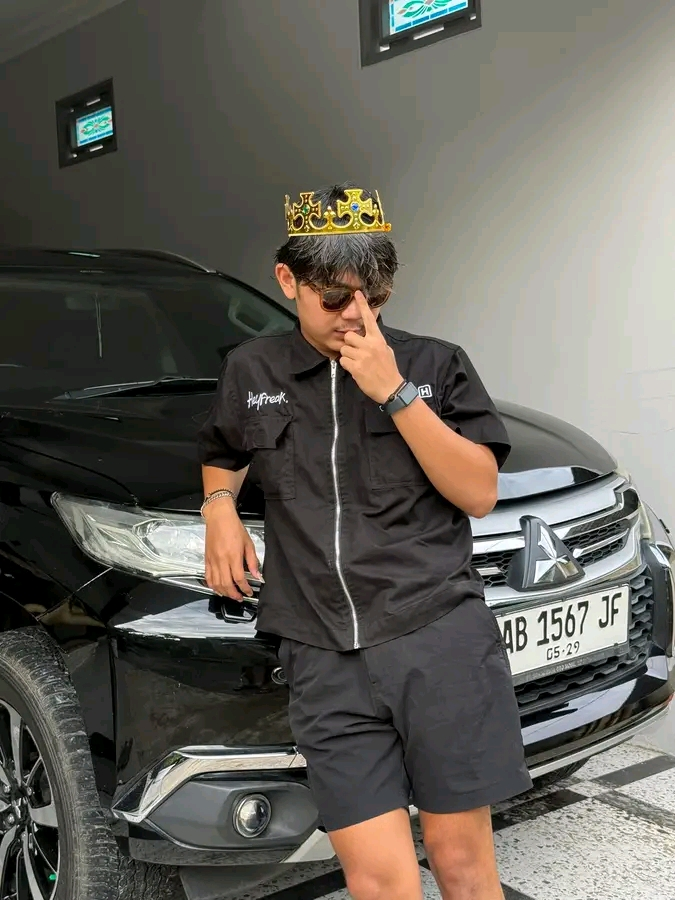
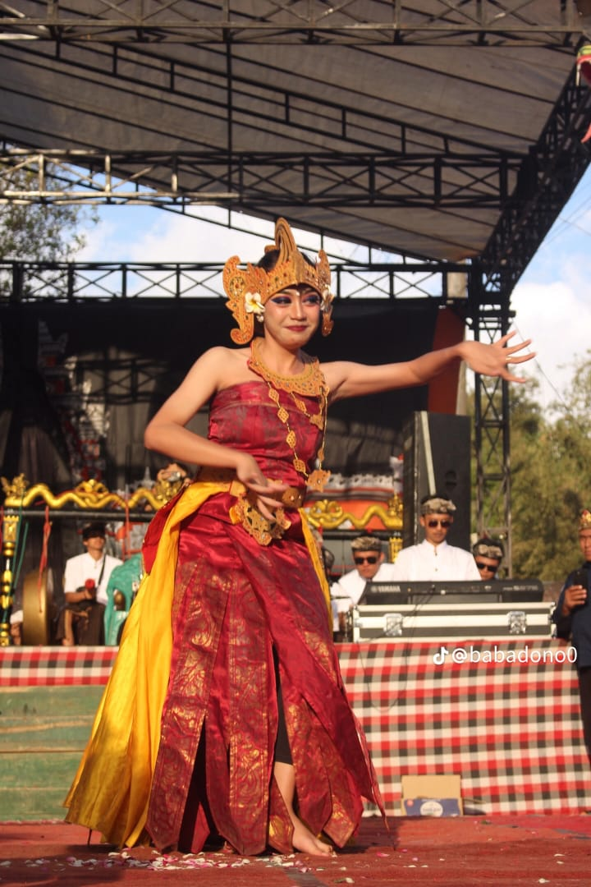
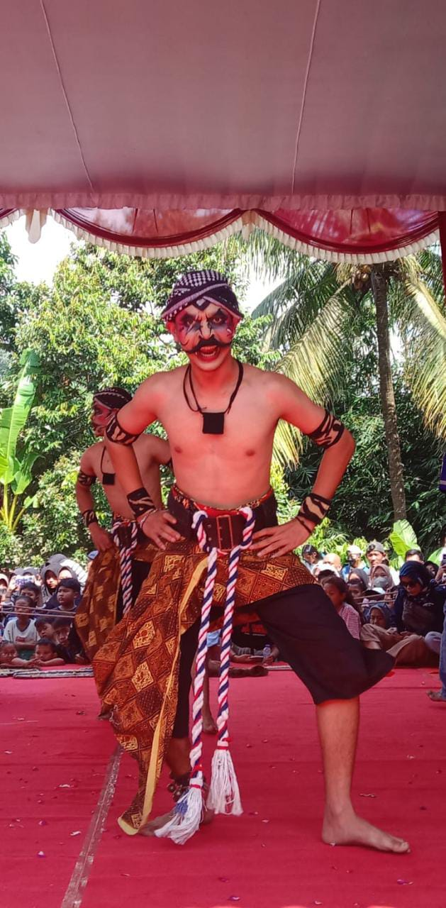
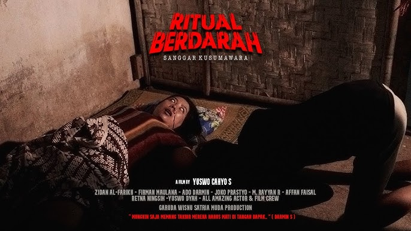

Seni · Budaya · Tradisi · Kebanggaan
Tentang GWSM

Garuda Wisnu Satria Muda (GWSM) adalah paguyuban seni tari dan budaya asal Dusun Pakuwon, Desa Bandonrejo, Kecamatan Tempuran, Kabupaten Magelang, Jawa Tengah.
Kelompok ini hadir sebagai wadah pelestarian seni tradisional, khususnya tari reog dan kuda lumping, yang di dalamnya secara bersama-sama untuk memajukan akar nusantara.
Melalui pelbagai pertunjukan terbaik, GWSM terus berkomitmen dengan menanamkan panca tradisional dan moralitas kehidupan menjaga semangat pelestarian generasi muda serta mewujudkan kebanggaan lewatnya di dunia digital.
Pelestarian Bahasa
Kami menjaga nilai-nilai tradisi lokal yang hampir terlupakan dalam era modernisasi.
Kebersamaan
Membangun rasa saling gotong royong dalam organisasi untuk mencapai visi yang lebih baik.
Edisi & Kreativitas
Terus berinovasi dengan karya-karya baru yang tetap berpijak pada tradisi yang kuat.


